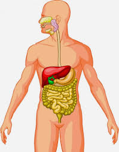
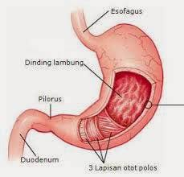
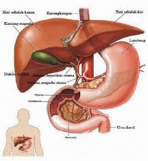

Pencernaan manusia

Proses pencernaan pada manusia dapat dibedakan menjadi dua macam, yaitu:
Pencernaan mekanik, adalah proses pengubahan makanan dari bentuk kasar menjadi bentuk kecil atau halus. Proses ini dilakukan dengan menggunakan gigi di dalam mulut.
Pencernaan kimiawi, adalah proses perubahan makanan dari zat yang kompleks menjadi zat-zat yang lebih sederhana dengan enzim, yang terjadi mulai dari mulut, lambung, dan usus. Enzim adalah zat kimia yang dihasilkan oleh tubuh yang berfungsi mempercepat reaksi-reaksi kimia dalam tubuh
Mulut
Proses pencernaan makanan dimulai sejak makanan masuk ke dalam mulut. Di dalam mulut terdapat alat-alat yang membantu dalam proses pencernaan, yaitu gigi, lidah, dan kelenjar ludah. Di dalam rongga mulut, makanan mengalami pencernaan secara mekanik dan kimiawi.
Gambar mulut
Makanan yang kita makan pertama masuk ke mulut yang kemudian menjadi halus karena telah dikunyah dengan geligi kita dan dibantu oleh kelenjar ludah. Setelah halus barulah dapat kita telan dengan cepat melalui bagian bawah tekak dan kerongkongan.
Gigi
Tanpa adanya gigi, manusia akan sulit memakan makanan yang dimakannya. Gigi tumbuh di dalam lesung pada rahang dan memiliki jaringan seperti pada tulang, tetapi gigi bukanlah bagian dari kerangka. Menurut perkembangannya, gigi lebih banyak persamaannya dengan kulit daripada dengan tulang.
Gambar gigi
Jenis gigi manusia
Gigi seri: berbentuk pipih dan tajam untuk mengiris makanan.
Gigi taring: ujungnya yang runcing untuk mencabik dan menyobek makanan.
Gigi premolar (geraham depan): bentuknya berlekuk- lekuk untuk mengiris dan melembutkan makanan.
Gigi molar (geraham belakang): bentuknya berlekuk-lekuk untuk melembutkan makanan.
Lidah
Lidah berfungsi untuk mengaduk makanan di dalam rongga mulut dan membantu mendorong makanan (proses penelanan) serta menghasilkan kelenjar ludah. Selain itu, lidah juga berfungsi sebagai alat pengecap yang dapat merasakan manis, asin, pahit, dan asam.
Gambar lidah
Kelenjer ludah
Kelenjar ludah menghasilkan ludah atau air liur ( saliva). Kelenjar ludah dalam mulut ada tiga pasang, yaitu:
Kelenjar parotis, terletak di bawah telinga. Kelenjar parotis menghasilkan ludah yang berbentuk cair.
Kelenjar submandibularis, terletak di rahang bawah.
Kelenjar sublingualis, terletak di bawah lidah. Kelenjar submandibularis dan kelenjar sublingualis menghasilkan getah yang mengandung air dan lendir.
Ludah berfungsi untuk memudahkan penelanan makanan, membasahi, dan melumasi makanan sehingga mudah ditelan. Selain itu, ludah juga melindungi selaput mulut terhadap panas, asam, dan basa.
Di dalam ludah terdapat enzim ptialin ( amilase) yang berfungsi mengubah makanan dalam mulut yang mengandung zat karbohidrat ( amilum) menjadi gula sederhana jenis maltosa. Enzim ptialin bekerja dengan baik pada pH antara 6.8 – 7 dan suhu 37 °C.
Kerongkongan
Kerongkongan bentuknya seperti pipa yang panjangnya pada orang dewasa kira-kira 25 cm. Pangkalnya adalah di leher, di belakang tenggorok, kemudian di daerah dada di belakang jantung, menembus sekat rongga badan di depan tulang belakang dan bermuara dalam lambung.
Kerongkongan berfungsi sebagai jalan bagi makanan yang telah dikunyah dari mulut menuju ke lambung. Pada kerongkongan tidak terjadi proses pencernaan. Bagian pangkal kerongkongan ( faring) berotot lurik dan bekerja secara sadar menurut kehendak kita. Makanan berada di dalam kerongkongan hanya sekitar enam detik. Otot kerongkongan dapat berkontraksi secara bergelombang sehingga mendorong makanan masuk ke dalam lambung. Gerakan kerongkongan ini disebut gerak peristaltik. Gerak ini terjadi karena otot yang memanjang dan melingkari dinding kerongkongan secara bergantian. Jadi gerak peristaltik merupakan gerakan kerongkongan untuk mendorong makanan masuk ke dalam lambung.
Gambar kerongkongan
Lambung
Lambung merupakan saluran pencernaan makanan yang melebar seperti kantung, terletak di bagian atas rongga perut sebelah kiri, dan sebagian tertutup oleh hati dan limpa. Makanan yang ditelan terkumpul dalam lambung dan bercampur dengan getah lambung, sehingga makanan menjadi encer seperti bubur. Jalan keluar lambung tertutup rapat karena tebalnya lapisan otot lingkar yang sewaktu-waktu terbuka untuk melewatkan bubur makanan sedikit demi sedikit ke dalam usus halus

Lambung terdiri atas empat bagian, yaitu bagian kardiak, fundus, badan lambung, dan pilorus. Kardiak berdekatan dengan hati dan berhubungan dengan kerongkongan. Pilorus berhubungan langsung dengan usus dua belas jari. Di bagian ujung kardiak terdapat klep atau spingter yang disebut spingter esofageal, sedangkan di ujung pilorus terdapat spingter pilorus. Spingter esofageal berfungsi untuk menjaga makanan agar tetap di lambung dan hanya akan terbuka pada saat makanan masuk atau pada saat muntah.
Dinding lambung terdiri atas otot-otot yang tersusun melingkar, memanjang, dan menyerong yang menyebabkan lambung berkontraksi. Dinding lambung mengandung sel-sel kelenjar yang berfungsi menghasilkan getah lambung. Makanan yang masuk ke dalam lambung tersimpan selama 2 – 5 jam. Selama makanan ada di dalam lambung, makanan dicerna secara kimiawi dan bercampur dengan getah lambung. Proses pencampuran tersebut dipengaruhi oleh gerak peristaltik.
Getah lambung adalah campuran zat-zat kimia yang sebagian besar terdiri atas air, asam lambung ( HCl), serta enzim pepsin, renin, dan lipase. Getah lambung bersifat asam karena mengandung banyak asam lambung. Asam lambung berfungsi untuk membunuh kuman penyakit atau bakteri yang masuk bersama makanan, mengubah sifat protein, dan mengaktifkan pepsinogen menjadi pepsin.
Pepsin berfungsi memecah protein menjadi pepton dan proteosa. Enzim renin berfungsi menggumpalkan protein susu (kasein) yang terdapat dalam susu. Lipase adalah enzim yang menghidrolisis trigliserida menjadi asam lemak dan gliserol. Dinding lambung juga menghasilkan hormon gastrin yang berfungsi untuk pengeluaran ( sekresi) getah lambung.
Makanan dicerna oleh otot lambung dan enzim sehingga makanan menjadi lembut seperi bubur dan disebut kim. Otot pilorus yang membentuk klep akan mengatur keluarnya kim sedikit demi sedikit dari lambung ke duodenum. Otot pilorus yang mengarah ke lambung akan mengendur jika tersentuh kim yang bersifat asam, sebaliknya otot pilorus yang mengarah ke duodenum akan mengerut jika tersentuh kim.
Hati
Hati adalah alat yang besar, terletak di bawah sekat rongga badan dan mengisi sebagian besar bagian atas rongga perut sebelah kanan. Hati membuat empedu yang terkumpul dalam kantung empedu. Empedu tersebut menjadi kental karena airnya diserap kembali oleh dinding kantung empedu. Pada waktu tertentu, empedu dipompakan ke dalam usus dua belas jari melalui pipa empedu.

Dalam metabolisme karbohidrat, hati berfungsi untuk:
Menyimpan glikogen.
Mengubah galaktosa dan fruktosa menjadi glukosa.
Glukoneogenesis (pengubahan molekul-molekul lemak, protein, dan laktat menjadi glukosa).
Membentuk senyawa kimia penting dari hasil perantara metabolisme karbohidrat.
Hati berfungsi sangat penting terutama untuk mempertahankan konsentrasi gula dalam darah. Pada metabolisme protein, hati berfungsi untuk:
Pembentukan sebagian besar lipoprotein.
Pembentuk sejumlah besar kolesterol dan fosfolipid.
Mengubah sejumlah besar karbohidrat dan protein menjadi lemak.
Pada metabolisme protein, hati berfungsi untuk:
Deaminasi asam amino, yaitu pengurangan gugus amin (-NH2) pada asam amino.
Pembentukan urea, untuk mengeluarkan amonia dari cairan tubuh.
Pembentukan plasma protein.
Interkonversi di antara asam amino yang berbeda untuk proses metabolisme tubuh.
Hati mempunyai kecenderungan untuk menyimpan vitamin. Vitamin yang disimpan di hati adalah A, D, dan Vitamin B12.
Pangkreas
Gambar pangkreas
Kelenjar pankreas adalah sebuah alat yang panjang melintang pada dinding belakang perut dan berjalan ke kiri sampai pada limpa. Perhatikan gambar 5.10. Ujungnya terletak dalam lengkung usus dua belas jari. Saluran pankreas bermuara di dalam usus dua belas jari bersama dengan saluran empedu. Sebagian jaringan pada pankreas dapat mengeluarkan getahnya yaitu insulin. Insulin akan dicurahkan langsung ke dalam darah. Karena itu, maka pankreas disebut juga kelenjar buntu. Bubur makanan yang keluar dari lambung dan masuk ke dalam usus halus bercampur dengan empedu dan getah pankreas sehingga pencernaan makanan berlangsung terus. Bubur makanan itu disiapkan untuk diserap zat-zat makanannya oleh dinding usus. Penyerapan ini juga terjadi pada usus halus lainnya, yang terletak berliku-liku dalam rongga perut bagian bawah.
Peran kelenjar pankreas dalam pencernaan adalah menghasilkan getah pankreas. Getah pankreas dialirkan ke dalam saluran pencernaan pada duodenum melalui ductus coledochus bersama cairan empedu. Getah pankreas mengandung lipase, garam karbonat, dan tripsinogen.
Lipase adalah enzim yang digunakan untuk memecah lemak menjadi asam lemak dan gliserol. Tripsinogen adalah enzim yang belum aktif, jika sudah aktif akan menjadi tripsin dan berperan mencerna protein secara kimiawi. Garam
karbonat berperan dalam pencernaan lemak.
Usus Halus
Usus halus terdiri atas tiga bagian, yaitu duodenum (usus dua belas jari), jejunum, dan ileum (usus penyerapan). Bagian pertama dari usus halus adalah usus duodenum (dua belas jari) yang melengkung seperti ladam. Panjangnya kira-kira 30 cm. Pada duodenum bermuara dua saluran, yaitu dari pankreas dan kantung empedu sehingga terjadi proses pencernaan secara kimiawi.
Gambar usus halus
Di dalam jejunum makanan mengalami pencernaan secara kimiawi oleh enzim yang dihasilkan oleh usus halus. Enzim-enzim tersebut adalah:
Enterokinase, berfungsi mengaktifkan tripsinogen yang dihasilkan pankreas.
Laktase, berfungsi mengubah laktosa menjadi glukosa.
Erepsin atau dipeptidase, berfungsi mengubah dipeptida atau pepton menjadi asam amino.
Maltase, berfungsi mengubah maltosa menjadi glukosa.
Disakarase, berfungsi mengubah disakarida menjadi monosakarida.
Peptidase, berfungsi mengubah polipeptida menjadi asam amino.
Sukrase, berfungsi mengubah sukrosa menjadi glukosa dan fruktosa.
Lipase, berfungsi mengubah trigliserida menjadi gliserol dan asam lemak.
Di dalam ileum banyak terdapat jonjot usus yang berfungsi untuk memperluas permukaan usus halus sehingga proses penyerapan makanan akan menjadi lebih sempurna. Zat makanan berupa glukosa, asam amino, vitamin, mineral, dan air setelah diserap oleh usus halus akan dibawa oleh darah melalui pembuluh vena porta hepatika ke hati. Selanjutnya dari hati ke jantung kemudian diedarkan ke seluruh tubuh.
Asam lemak dan gliserol bersama empedu membentuk suatu larutan yang disebut misel. Selanjutnya asam lemak dan gliserol dibawa oleh pembuluh getah bening ( pembuluh kil) dan akhirnya masuk ke dalam peredaran darah. Garam empedu yang masuk ke darah menuju ke hati dibuat empedu
kembali.
Vitamin yang larut dalam lemak (A, D, E, K) diserap oleh usus halus dan diangkut melalui pembuluh getah bening. Selanjutnya vitamin-vitamin tersebut masuk ke peredaran darah.
Umumnya sari makanan diserap saat mencapai akhir usus halus. Sisa makanan yang tidak diserap, secara perlahan-lahan bergerak ke usus besar. Seluruh usus halus panjangnya beberapa meter. Ujungnya bermuara ke dalam sisi usus besar sehingga terbentuk usus buntu, yaitu suatu bagian pendek usus besar yang buntu.
Usus Besar
Di sebelah kanan dalam rongga perut terdapat usus besar naik, dalam rongga perut sebelah atas terdapat lanjutannya sebagai usus besar melintang, dan dalam rongga perut sebelah kiri dijumpai usus besar turun yang berlanjut sebagai usus besar bentuk “S”. Perhatikan gambar 5.12. Setelah usus besar berbentuk S terdapat poros usus (rektum). Di dalam usus besar sisa-sisa makanan yang tidak dapat dicerna lagi menjadi kental, karena airnya diserap kembali oleh dinding usus besar. Sisa makanan tersebut sampai ke dalam poros usus yang terletak pada dinding belakang panggul kecil. Perjalanan makanan di dalam usus besar dapat mencapai 4 – 5 jam. Namun, di usus besar makanan dapat disimpan sampai 24 jam.
Gambar usus besar
Di dalam usus besar terdapat bakteri Escherichia coli. Bakteri ini membantu dalam proses pembusukan sisa makanan menjadi feses. Selain itu, E. coli juga menghasilkan vitamin K yang berperan penting dalam proses pembekuan darah.
Anus
Di dalam usus besar, feses didorong secara teratur dan lambat oleh gerakan peristaltik menuju ke rektum (poros usus) yang merupakan bagian akhir dari saluran pencernaan. Bagian bawah poros usus itu akhirnya bermuara pada lubang dubur yang nantinya mengeluarkan feses. Gerakan peristaltik dikendalikan oleh otot polos (otot tak sadar). Akan tetapi, pada saat buang air besar otot spingter di anus dipengaruhi oleh otot lurik (otot sadar). Jadi, proses defekasi (buang air besar) dilakukan dengan sadar, yaitu dengan adanya kontraksi otot dinding perut yang diikuti dengan mengendurnya otot spingter anus dan kontraksi kolon serta rektum. Akibatnya, feses dapat terdorong ke luar anus.